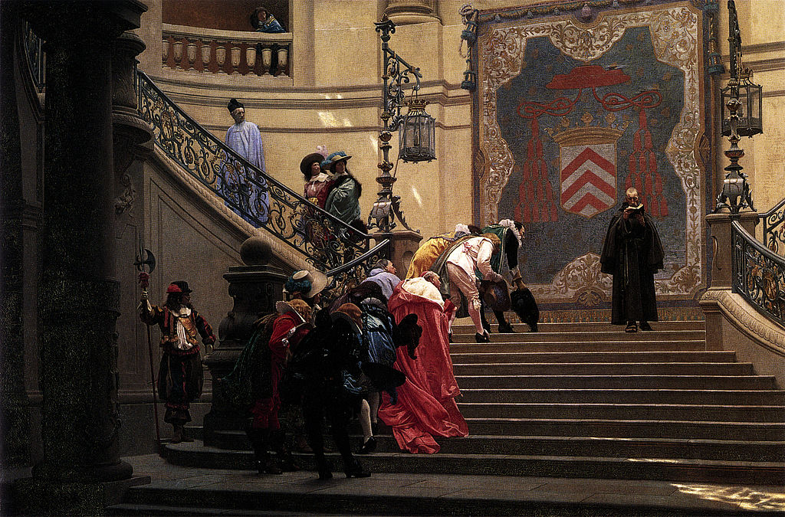

<head>
<meta charset="UTF-8" />
<meta name="keywords" content="drawing, painting" />
<meta name="description" content="drawings by Sunjy" />
<title>Sunjy</title>
<link rel="shortcut icon" type="image/x-icon" href="../../mImages/mCommon/favicon.ico" media="screen" />
<link rel="stylesheet" type="text/css" href="../../mCsses/mCommon/mCssA.css" />
<link rel="stylesheet" type="text/css" href="../../mCsses/mCommon/mCssB.css" />
<link rel="stylesheet" type="text/css" href="../../mCsses/mCommon/mCssC.css" />
<link rel="stylesheet" type="text/css" href="../../mCsses/mCommon/mCssD.css" />
<link rel="stylesheet" type="text/css" href="../../mCsses/mContent/mCssA.css" />
<link rel="stylesheet" type="text/css" href="../../mCsses/mContent/mCssB.css" />
<link rel="stylesheet" type="text/css" href="../../mCsses/mContent/mCssC.css" />
<link rel="stylesheet" type="text/css" href="../../mCsses/mContent/mCssD.css" />
</head>
<script type="text/javascript" src="../../mScripts/mContent/mContentAA.js" /></script>
<script type="text/javascript" src="../../mScripts/mContent/mContentAB.js" /></script>
<script type="text/javascript" src="../../mScripts/mContent/mContentAC.js" /></script>
<script type="text/javascript" src="../../mScripts/mContent/mContentAD.js" /></script>
<script type="text/javascript"></script> 
<script type="text/javascript">
document.write('<div class="mImgAbsolute"></div>');
/*
document.write('<p class="mFontSizeBColor" />From a white paper...</p>');
document.write('<table class="center"><tr><td>');
document.write('');
document.write('</td></tr></table>');
*/
</script>


<script type="text/javascript">
document.write('<p class="mFontSizeBColor" />Grey Eminence</p>');
document.write('<p class="mFontSizeSColor" />“L’Eminence Grise” by Jean-Léon Gérôme depicts the palace of Cardinal Richelieu, the “Red Cardinal,” virtual ruler of France during the childhood of Louis XIII.<br><br>Descending the staircase is Richelieu’s chief adviser, François Le Clerc du Trembly, a friar known as L’Eminence grise (the Gray Cardinal), a term that has come to mean “the power behind the throne.”<br><br>All of the officials, political, military, and religious, going up the grand staircase bow to the friar in deference to his influence as an advisor to the “Red Cardinal.”<br><br>Éminence Grise is french for “grey eminence” and refers to a powerful decision-maker or adviser who operates “behind the scenes” in an unofficial capacity.<br><br>Leclerc was a Capuchin friar who was renowned for his beige robe attire, as beige was termed “grey” in that era.<br><br>The title, “His Eminence” was used to address a cardinal in the Roman Catholic Church. Although Leclerc was not a cardinal, those around him addressed him as such in deference to the considerable influence this “grey” friar held over “His Eminence the Cardinal.”<br><br>Aldous Huxley wrote an English biography of Leclerc entitled “Grey Eminence.” Leclerc is also referred to in Alexandre Dumas’ “The Three Musketeers” as the character Father Joseph, an influential associate of Richelieu, and one to be feared.<br><br>Gérôme’s art epitomized the academic style against which the Impressionists rebelled. His paintings are meticulous in their detail and had brilliant effects of color and light.<br><br>Cardinal Richelieu<br><br>Cardinal Armand Jean du Plessis, Duke of Richelieu (1585 – 1642) was a French clergyman and statesman. He was appointed Foreign Secretary in 1616 and King Louis XIII’s chief minister in 1624.<br><br>He remained in office until he died in 1642; he was succeeded by Cardinal Mazarin, whose career he had fostered.<br><br>Cardinal de Richelieu sought to consolidate royal power and crush domestic factions. He restrained the power of the nobility and transformed France into a strong, centralized state.<br><br>Richelieu has been depicted as the lead villain in Alexandre Dumas’s novel “The Three Musketeers” and its numerous film adaptations.<br><br>François Leclerc du Tremblay<br><br>François Leclerc du Tremblay (1577 – 1638) was a French Capuchin friar, confidant and agent of Cardinal Richelieu.<br><br>He was the original “grey eminence,” a term for an influential advisor or decision-maker who operates secretly or unofficially.<br><br>In 1612 he established those personal relations with Richelieu that established his reputation and reference to “éminence grise.” The description drew on the grey friar’s cloak, and the title “eminence” conferred on Richelieu as a cardinal.<br><br>François Leclerc du Tremblay, also known as Père Joseph, became a war minister, and, though maintaining a personal austerity in his life, he devoted himself to diplomacy and politics.<br><br>He had a dream of arousing Europe to another crusade against the Ottoman Empire.<br><br>Historical Examples of Éminence grise<br><br>Vice President Dick Cheney was described as an éminence grise of the George W. Bush administration. He was a powerful and uncompromising politician with the ear of the president.<br><br>Former diplomat and policymaker Dennis Ross was viewed as the éminence grise on Middle East matters during multiple USA administrations.<br></p>');
document.write('<table class="center" /><tr><td>');
document.write('<br>Descending the staircase is Richelieu’s chief adviser, François Le Clerc du Trembly, a friar known as L’Eminence grise (the Gray Cardinal), a term that has come to mean “the power behind the throne.”<br><br>All of the officials, political, military, and religious, going up the grand staircase bow to the friar in deference to his influence as an advisor to the “Red Cardinal.”<br><br>Éminence Grise is french for “grey eminence” and refers to a powerful decision-maker or adviser who operates “behind the scenes” in an unofficial capacity.<br><br>Leclerc was a Capuchin friar who was renowned for his beige robe attire, as beige was termed “grey” in that era.<br><br>The title, “His Eminence” was used to address a cardinal in the Roman Catholic Church. Although Leclerc was not a cardinal, those around him addressed him as such in deference to the considerable influence this “grey” friar held over “His Eminence the Cardinal.”<br><br>Aldous Huxley wrote an English biography of Leclerc entitled “Grey Eminence.” Leclerc is also referred to in Alexandre Dumas’ “The Three Musketeers” as the character Father Joseph, an influential associate of Richelieu, and one to be feared.<br><br>Gérôme’s art epitomized the academic style against which the Impressionists rebelled. His paintings are meticulous in their detail and had brilliant effects of color and light.<br><br>Cardinal Richelieu<br><br>Cardinal Armand Jean du Plessis, Duke of Richelieu (1585 – 1642) was a French clergyman and statesman. He was appointed Foreign Secretary in 1616 and King Louis XIII’s chief minister in 1624.<br><br>He remained in office until he died in 1642; he was succeeded by Cardinal Mazarin, whose career he had fostered.<br><br>Cardinal de Richelieu sought to consolidate royal power and crush domestic factions. He restrained the power of the nobility and transformed France into a strong, centralized state.<br><br>Richelieu has been depicted as the lead villain in Alexandre Dumas’s novel “The Three Musketeers” and its numerous film adaptations.<br><br>François Leclerc du Tremblay<br><br>François Leclerc du Tremblay (1577 – 1638) was a French Capuchin friar, confidant and agent of Cardinal Richelieu.<br><br>He was the original “grey eminence,” a term for an influential advisor or decision-maker who operates secretly or unofficially.<br><br>In 1612 he established those personal relations with Richelieu that established his reputation and reference to “éminence grise.” The description drew on the grey friar’s cloak, and the title “eminence” conferred on Richelieu as a cardinal.<br><br>François Leclerc du Tremblay, also known as Père Joseph, became a war minister, and, though maintaining a personal austerity in his life, he devoted himself to diplomacy and politics.<br><br>He had a dream of arousing Europe to another crusade against the Ottoman Empire.<br><br>Historical Examples of Éminence grise<br><br>Vice President Dick Cheney was described as an éminence grise of the George W. Bush administration. He was a powerful and uncompromising politician with the ear of the president.<br><br>Former diplomat and policymaker Dennis Ross was viewed as the éminence grise on Middle East matters during multiple USA administrations.<br>" />');
document.write('</td></tr></table>');
</script>


